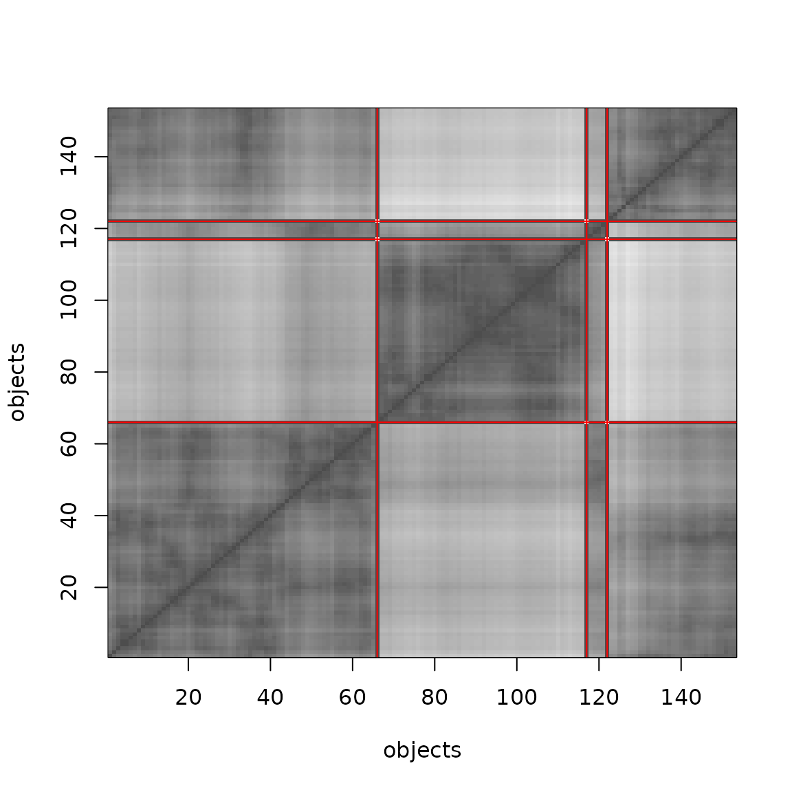
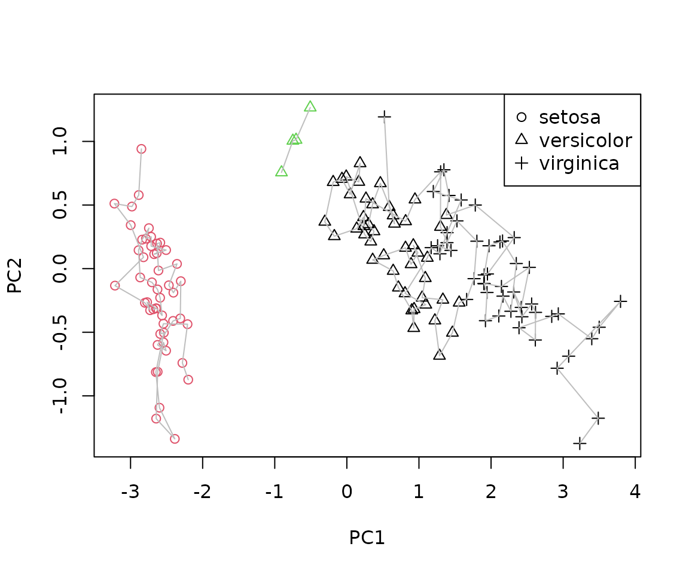
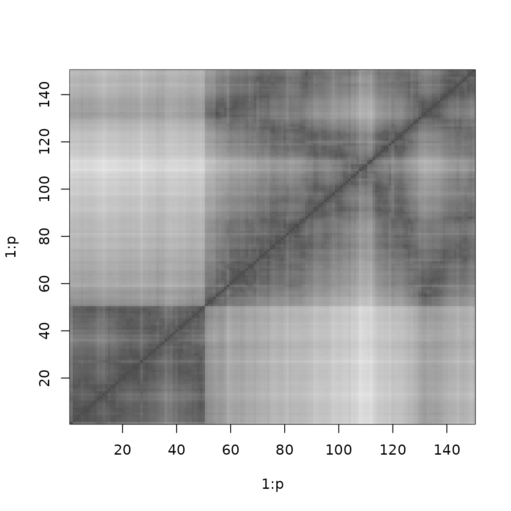

Rearrangement clustering
Michael Hahsler and Kurt Hornik
Source:vignettes/rearrangement_clustering.Rmd
rearrangement_clustering.RmdThis vignette shows how to use the R package TSP (Hahsler and Hornik 2007) for rearrangement clustering. Solving a TSP can be used to cluster objects and to find a linear order of objects. This was suggested several times in the literature (Lenstra 1974; Alpert and Kahng 1997; Johnson et al. 2004). The idea is that objects in the same cluster are visited consecutively, so a short tour through all objects only makes a large “jump” when it moves from one cluster to the next.
Climer and Zhang (2006) call this approach rearrangement clustering and show how the cluster boundaries can be found automatically: to obtain \(k\) clusters, add \(k\) dummy cities that have the same constant distance to all other cities and are infinitely far from each other. In an optimal tour, the dummy cities must separate the most distant groups of cities and thus represent the cluster boundaries.
In TSP, dummy cities are added with
insert_dummy() and the tour is split into paths (clusters)
with cut_tour().
Preparing the problem
We use the iris data, which contains measurements for 150 flowers of three species. Since we know the species, we can check how well the clustering recovers them. We create a TSP from the Euclidean distances between the measurements and use the species as city labels.
data("iris")
x <- iris[, 1:4]
tsp <- TSP(dist(x), labels = iris$Species)
tsp
#> object of class 'TSP'
#> 150 cities (distance 'euclidean')Now we add three dummy cities labeled "boundary".
tsp_dummy <- insert_dummy(tsp, n = 3, label = "boundary")
tsp_dummy
#> object of class 'TSP'
#> 153 cities (distance 'euclidean')The default constant distance of 0 is guaranteed to work if the
solver finds the optimal tour. For heuristics, which are not optimal, a
larger const (e.g., 2 * max(tsp)) may give
better results.
Solving
We solve the problem with the default heuristic. Since the heuristic is not optimal, it is not guaranteed that the dummy cities represent the best cluster boundaries.
library(doParallel)
#> Loading required package: foreach
#> Loading required package: iterators
#> Loading required package: parallel
registerDoParallel()
set.seed(100)
tour <- solve_TSP(tsp_dummy, opt = "three", rep = 10)
tour
#> object of class 'TOUR'
#> result of method 'arbitrary_insertion+three_opt_rep_10' for 153 cities
#> tour length: 46.39598Visualizing the result
The permuted distance matrix shows the clusters as dark blocks along the diagonal. Light areas represent large distances. The red lines mark the positions of the dummy cities in the tour, i.e., the cluster boundaries.
image(tsp_dummy, tour, xlab = "objects", ylab = "objects")
boundaries <- which(labels(tour) == "boundary")
abline(h = boundaries, col = "red")
abline(v = boundaries, col = "red")
Extracting the clusters
cut_tour() cuts the tour at the dummy cities and returns
the paths between them. Each path is a cluster. Here, we get a list of
index vectors into the original data (the dummy cities are
excluded).
clusters <- cut_tour(tour, cut = "boundary")
lengths(clusters)
#> boundary boundary boundary
#> 96 50 4Because the tour is a cycle, the part of the tour after the last
dummy city is connected to the beginning of the tour, and
cut_tour() takes care of this. The cluster assignment can
be converted into a label vector and compared to the known species.
# indices are positions in the data without dummy cities
cl <- integer(nrow(x))
for (i in seq_along(clusters)) cl[clusters[[i]]] <- i
table(cluster = cl, species = iris$Species)
#> species
#> cluster setosa versicolor virginica
#> 1 0 46 50
#> 2 50 0 0
#> 3 0 4 0With the random numbers used here, the three dummy cities split the
data into groups of 93, 50 and 7 flowers. One boundary separates
Setosa perfectly from the other two species, but the second
boundary only splits off 7 Versicolor flowers, while the rest
of Versicolor and all Virginica flowers end up in the
same cluster. The exact result depends on the heuristic and the random
numbers (i.e., on set.seed()), but the underlying reason is
that Versicolor and Virginica are close to each other
in the feature space. This problem is similar to the chaining
effect in single-linkage hierarchical clustering since the tour
only uses the distances between neighboring points.
Projecting the paths
To see the problem, we project the data on the first two principal components and draw the paths that form the clusters.
pc <- prcomp(x)$x[, 1:2]
true_class <- as.integer(iris$Species)
plot(pc, pch = true_class, col = cl, xlab = "PC1", ylab = "PC2")
for (p in clusters) lines(pc[p, ], col = "gray")
legend("topright", legend = levels(iris$Species), pch = 1:3)
The points of Versicolor and Virginica overlap, so it separates a few point on the top side of the cluster.
Ordering objects
If only a linear order of objects is needed (seriation) and not a clustering, a single dummy city is enough to turn the tour into a path. The shortest path through the distances is found by cutting the tour at the dummy city.
tsp1 <- insert_dummy(tsp, label = "cut")
set.seed(1234)
tour1 <- solve_TSP(tsp1)
path <- cut_tour(tour1, "cut")
head(path)
#> setosa setosa setosa setosa setosa setosa
#> 42 46 13 2 26 10Reordering the distance matrix by this path groups similar objects together.
image(tsp, order = path)
The R package seriation (Hahsler et al. 2006) uses the TSP solvers from TSP for seriation of general proximity matrices.